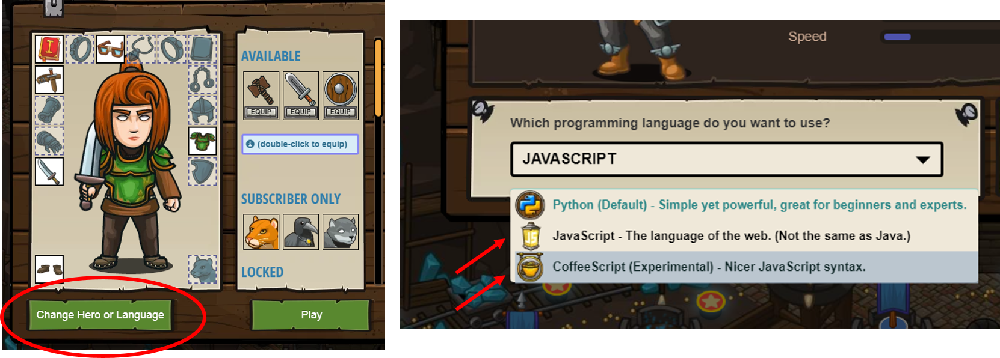

Extend Yourself
- Try switching the programing language to the experimental code called Coffee Script, and work through your favorite challenge in Kithgard Dungeon. What is similar and different between Coffee Script and Python? Which one do you like better and why?
- Write your own code language. What symbols will you use? How will you make your commands clear and short? What will you call your new code language? Rewrite the code for your favorite challenge in your new code and share it with a classmate.
